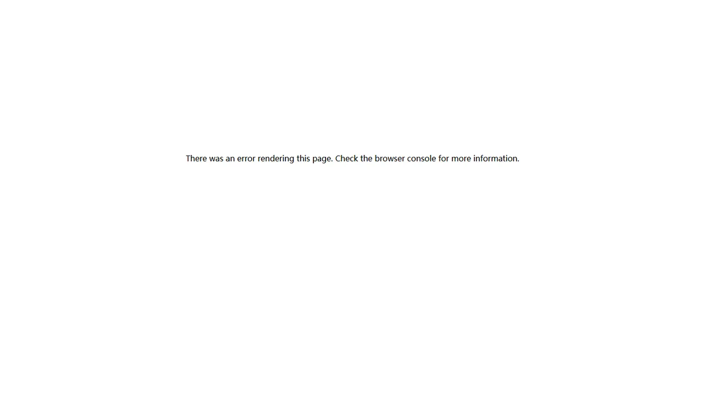
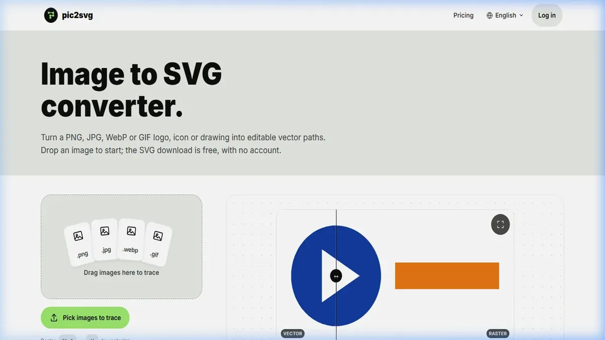
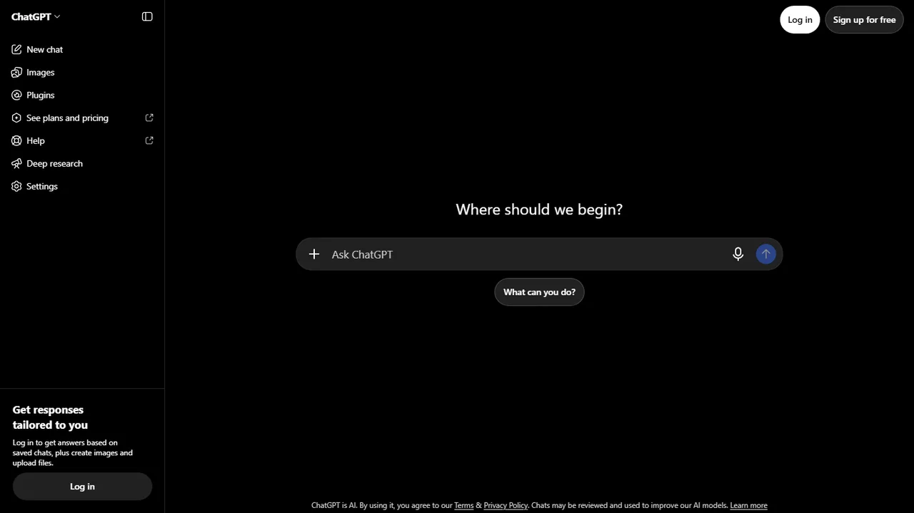
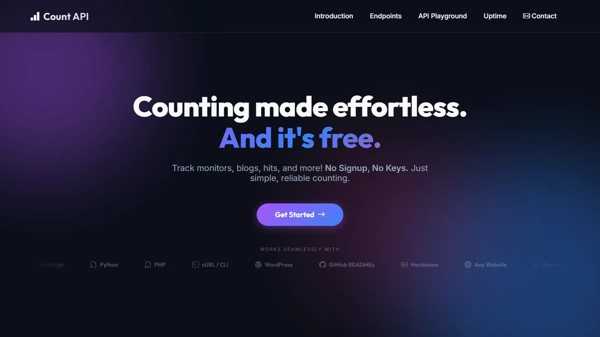

Empower Static Websites with Zero Backend Servers
You don't need WordPress, a monolithic CMS, or expensive cloud servers. Discover 124+ curated tools, services, and APIs for building modern static sites with HTML, CSS, and JavaScript.
Top Viewed Tools
The most popular and explored tools across the static web ecosystem.

AI & Content Creationimgmov
AI-powered video and image generation tool that turns product photos and prompts into commercial videos, images, and visual assets for static websites.

Images & OptimizationPic2SVG
Convert raster images into scalable, editable SVG vector paths with free browser-based tracing.

AI & Content CreationChatGPT
The leading conversational AI model for drafting blog posts, landing page copy, and structured HTML/Markdown content.

Analytics & PrivacyCountAPI
Free, key-based hit counter and view tracking API with zero signup or keys required.
Explore by Category
Jump to any category or view all tools in the master archive.
AI & Content Creation
AI-powered tools for writing website copy, drafting blog articles, creating structured markdown, and generating visual content.
AI Models
Leading proprietary and open-weights foundation models powering web APIs, code generation, and client-side inference.
Analytics & Privacy
Understand website traffic, visitor behavior, and page performance.
Authentication & User Management
Add user login, member areas, and gated content to static sites without backend code.
Booking & Scheduling
Allow visitors to book appointments and discovery calls directly from static pages.
Browser Extensions
Helpful browser extensions for static site development, link sharing, and productivity.
Comments & Community
Let visitors comment on blog posts and interact with your content.
Contact Forms
Add contact forms to static websites without building your own form-processing backend.
Content Management
Manage content on static websites without adopting a traditional, full-featured CMS.
CSS & UI Component Libraries
Build responsive, accessible user interfaces without complex build steps or heavy frameworks.
Database & Backend-as-a-Service
Store, query, and synchronize data from static frontends without maintaining servers.
Development Tools
Tools that make building, testing, and maintaining static websites easier.
Hosting & Deployment
Services for publishing static HTML, CSS, and JavaScript websites online.
Images & Optimization
Optimize images and other assets to improve loading speed and user experience.
Interactive Maps & Geolocation
Add mobile-friendly, interactive vector and raster maps without API billing hurdles.
Interactive Scripts & Animation
Add carousels, image lightboxes, and scroll animations to static pages with vanilla JS.
Live Chat & Support
Engage visitors and answer questions in real time with lightweight chat widgets.
Media & Video Players
Embed audio, video, and streaming media without intrusive third-party ads or trackers.
Monitoring & Error Tracking
Detect client-side JavaScript crashes and monitor performance in production.
Newsletters & Email
Collect subscribers, send newsletters, and handle email delivery from static websites.
Payments & E-commerce
Sell digital downloads, services, memberships, and other products from static websites.
Search
Add search functionality to static websites, documentation, and blogs.
Security & Spam Protection
Protect forms and websites against automated spam and abuse.
Static Site Generators
Build fast, pre-rendered static HTML websites from templates and Markdown.
Surveys & Feedback
Gather visitor responses, run interactive polls, and publish product roadmaps.
Tutorials
Guides, video walkthroughs, and step-by-step tutorials for building and maintaining modern websites.
Typography & Web Fonts
Self-host open-source web fonts or use privacy-first, GDPR-compliant CDN font services.